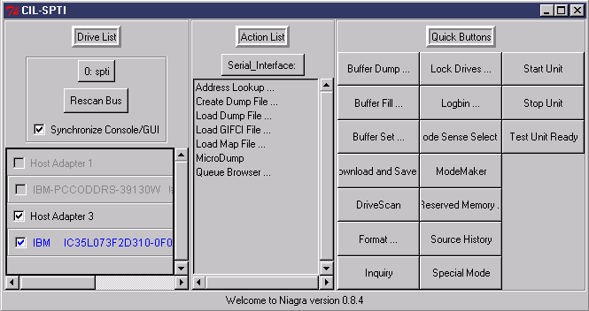
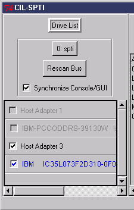
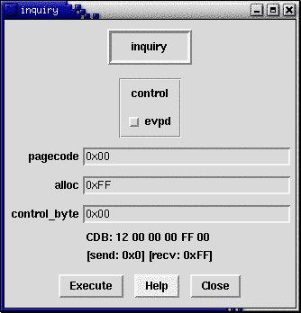
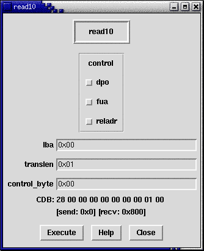
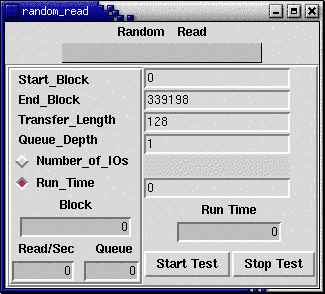
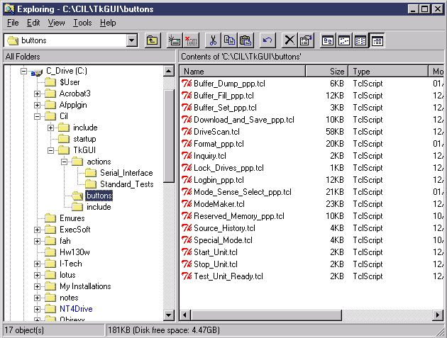

Note the "buttons" above labeled 0: spti
and Serial_Interface. These buttons
are actually drop down menus, allowing other options. The GUI is organized
into three panels. The left panel is the device selection window.
The center panel is the multipurpose list (which is currently showing available
serial commands). The right panel shows quick buttons where commonly used
features can be placed. To choose a center panel option double click
the option.
On the left we have our device selection panel:

Here we have a list of all of the devices that the current UIL has access to, organized by host adapter. Clicking on the drop down menu allows other UIL drivers to be selected. Clicking on the "Rescan Bus" button causes the shown UIL to rescan its interface for devices. To select a device, click on it's checkbox.
Note the checkbox labeled "Synchronize Console/GUI". When this checkbox is checked, clicking on a new device in the GUI will change the current device in the console window. Furthermore, changing the current device in the console window (with device set index or uil set index) will change the device in the GUI.
When this checkbox is unchecked, changes to the GUI will not effect
the current device in the console, and vice versa. Furthermore, you can
select multiple devices in the GUI when this option is off. The ability to select
multiple devices is useful when formatting, downloading code, or performing
other operations to an array of devices. There are two other potential
benefits to having this option unchecked:

One thing to note is the CDB listed at the bottom. As you update
the fields in the GUI, the CDB is updated to show the effect of your changes.
The "Execute" button sends the command to the drive(s) (multiple drives
will receive the command if multiple drives are selected). The "Help"
button prints the equivalent of the -help option in the console window.
Buffer fill is an interactive version of the buff fill family of commands and the buff load command. All of the same functions are provided. Furthermore, the actual buff fill command sequence is printed after each command execution (useful for copy-paste). A buff dump of the buffer is also outputted to confirm proper data format.
The "Buffer Dump" Dialog is a GUI front end for the buff dump and buff save commands. This dialog provides a point and click method for viewing buffer contents.
The "Buffer Set" Dialog is a GUI front end for buff set ri (bri), buff set si (bsi), buff get ri, and buff get si. The sliders are used to change the buffer indexes of the send and receive buffers. Commands that transfer data from the drive to the host copy this data into the Receive buffer. Commands that transfer data from the host to the drive get this information from the send buffer.
This dialog allows you to download microcode to one or more drives (all
selected drives will be targeted). The command line equivalent of
this command is:
dwnldsv <filename>This command operates by sending write_buffer commands in 32k increments to the drive(s).
The format dialog allows one or more drives to be simultaneously formatted.
A status bar for each drive being formatted is displayed. The command
line equivalent to the format gui is:
****************************************Command Name(s): fmt_unit
Description: Performs a device performs a return immediate format
Parameters:
Name Range Default | Description
-----------------------------------------+----------------------------------
-blocksize (1-MAX LBA) 512 | Determines the new blocksize
-plist or -glist NA -glist | Set or unsets the CMPLst bit
-crt (0 or 1) 0 | Disables or enables certification
-fastformat (0 or 1) 0 | Set to do a fast format
-merge (0 or 1) 0 | Set to merge GList with PList
The "Lock Drives" Dialog provide a GUI alternative to the device lock, device unlock, and device islocked commands. To lock/unlock a device, highlight the device and click on the appropriate arrow button. The results will immediately be shown in the device list (locked devices are dimmed in the device list). Another useful option is the "Apply on start-up" checkbutton. When checked, your settings will automatically be applied the next time Niagara is started.
The "LogBin" GUI allows you to dump logs on one or more drives in the Discovery
and Piranha families. These file can then be parsed by Code Update's "logdump"
tool. The "suffix pattern" is used to identify multiple drives.
By default, the files are named "test0.bin", "test1.bin", ..., one file for
each drive. The command line equivalent for this GUI is:
logbin <filename>
The Mode Sense / Select interface provides a "hex based" interface to the mode sense and select commands. Using the GUI is recommend over the command line in most cases because the mode_select command is somewhat involved to set up correctly (it can be done, but requires a couple of steps) at the command line. This dialog makes viewing and changing values easy.
The reserved memory access dialog is a front end to special mode cdbs that access the reserved area. Note that the drive must be in special mode to use this dialog.
This dialog allow you to easily change the drive to special mode and back again.
This simple but useful utility allows you to source files without using
the source command. Even more
conveniently, it remembers the last 50 files you sourced, making a "re-source"
operation as easy as a button click.
These functions provide a variety of standard CSO tests. Double click a test to bring up the testing dialog. Here is an example of one of the test dialogs:

Here is a look at the buttons folder:

One more thing to note here. In the files you drag into this folder,
you will want to define a procedure named:
<filename>_InitFor example, if you had a TCL script called Party_Time.tcl, you should define a procedure called
Party_Time_InitThe <filename>_Init procedure is called when you click on the button or activate the action.